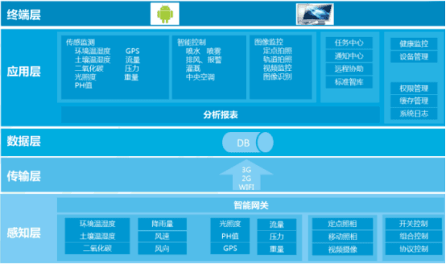
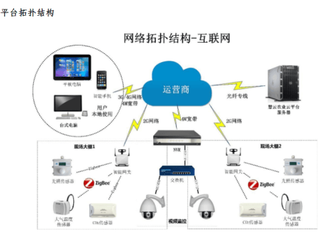

方案简介
物联网服务平台利用国际领先的“物联网、移动互联网、云计算”技术，借助个人电脑、智能手机，实现对农业生产现场气象、土壤、水源环境的实时监测，对大棚、温室的灌溉、通风、降温、增温等农业设施实现远程自动化控制。结合视频直播、智能预警等强大功能，帮助广大农业工作者随时随地掌握农作物生长状况及环境变化趋势。该系统的使用可减少人工、精准调控，规避风险。
方案优势
•标准化 •规模化 •信息化 •市场化
功能明细
•环境传感监测
通过部署在农业生产现场的物联网设备，如采集器、传感器、高清摄像头、摄像机等，可以及时监测采集生产现场的数据，并及时上传至服务器或云端。用户通过手机或者电脑登陆智慧农业云平台即可查看园区的气象数据、土壤数据、设备状态等。具体包括：
气象数据：空气温度、空气湿度、光照时长、光照强度、降雨量、风速、风向、二氧化碳浓度
土壤数据：土壤温度、土壤含水率、土壤pH值、土壤EC值
设备状态：水泵压力、水肥流量、设备运行记录
•视频图像监控
在种植现场安装360°视频监控设备以及高清摄像机，可实现对种植现场进行实时监控。用户只需要通过手机或者电脑就可以对作物情况进行远程查看。同时可进行视频录像，视频回放。
•农业设施远程控制
设定监控条件后，可实现定时计划控制，传感联动自动控制。无须人工参与，系统即可根据设定条件远程控制生产现场的设备，自动实现灌溉、排风、降温等作业。
系统构成
系统架构包括感知层、传输层、数据层、应用层、终端层
感知层：终端各类传感设备的数据智能采集、终端控制设备接收指令并智能控制设备
传输层：基于3G、2G、WIFI网络的安全数据通道 数据层：基于SQL Server企业级分布式数据存储
应用层：包括监控中心、报表中心、任务管理中心、交流中心、溯源中心、流程中心等核心业务实现
客户端：智能手机及平板电脑客户端【IOS、Android】应用、电脑网页浏览及应用

为保证系统先进性、适应未来信息化发展及业务需求，系统设计遵循以下技术标准：
以.NET Framework4.0为基础构建服务平台，服务平台支持微软公有云及私有云部署，以JSON数据格式传输，支持Socket、HTTP通讯协议，以JQuery构建Web前端，以Android和iOS构建移动应用终端。
支持10000个以上传感设备并发连接，每1秒一个心跳业务处理。
支持中间层高性能分布式部署，支持多个Web前端站点，支持跨域访问。
支持Http及https协议数据访问。
支持服务接口令牌Token安全审计和校验。
支持核心数据MD5加密。
